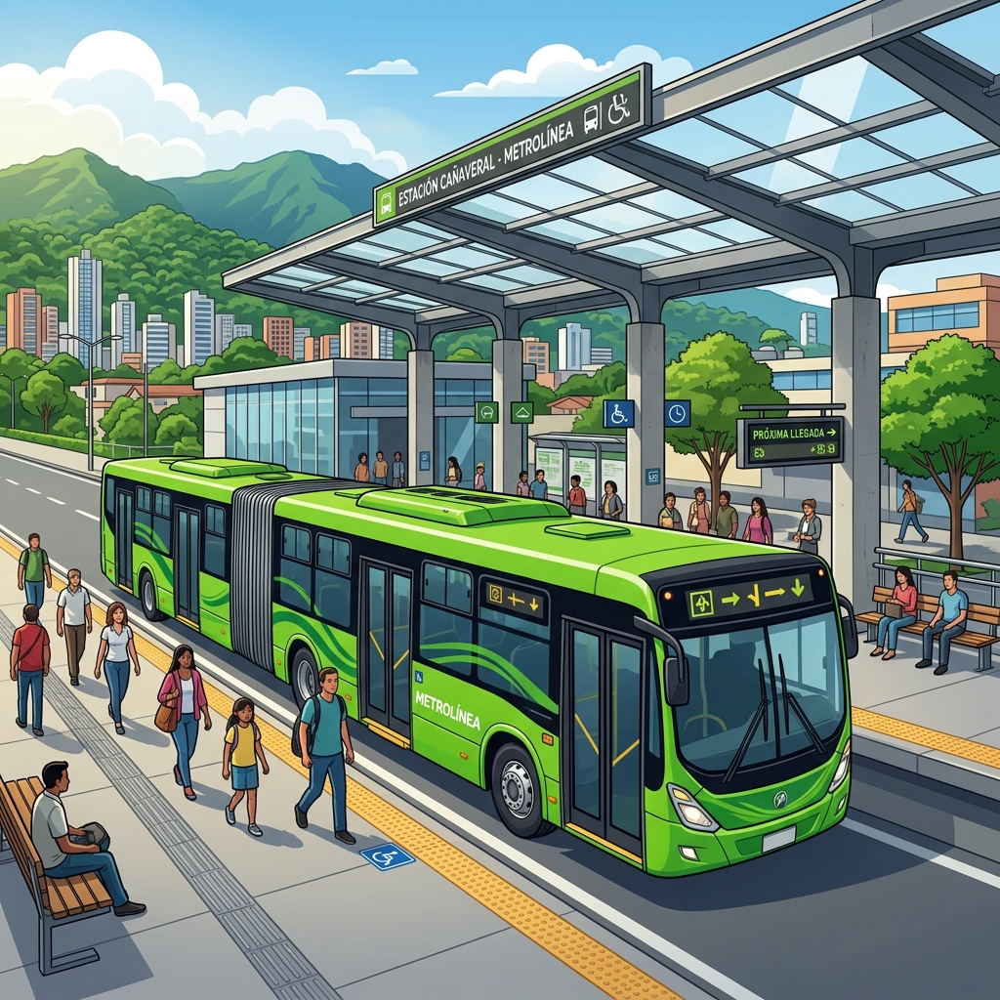

Canal de Atención Ciudadana Activo
Portal de Reportes de
Metrolínea Bucaramanga
Bienvenido al sistema oficial de reporte de novedades del Sistema Integrado de Transporte Masivo del Área Metropolitana de Bucaramanga (Metrolínea). Aquí puedes reportar daños en buses articulados, infraestructura de estaciones, portales de transferencia o afectaciones en el carril exclusivo en tiempo real.
